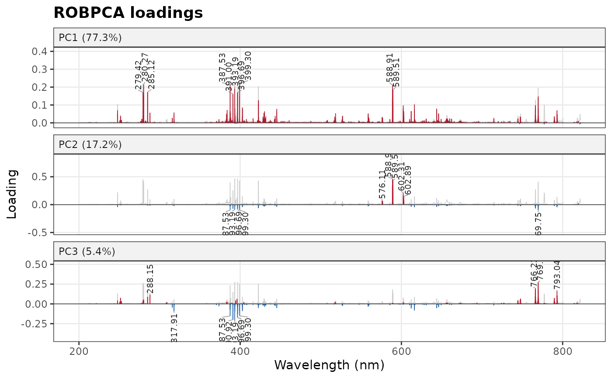
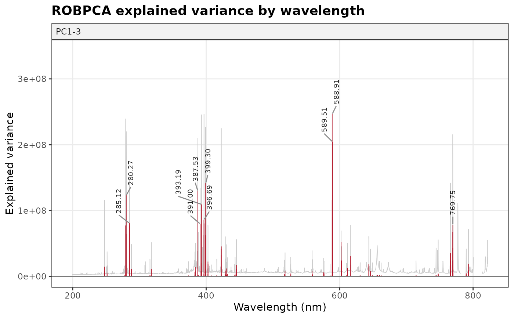

Plots the loadings of a PCA against wavelength, one panel per component,
and labels the wavelengths that contribute most to each component, with
the emission lines they match when a line list is given. With
type = "contribution", plots instead the variance of each wavelength
explained by the components, which shows in one panel which lines drive
the variance of the spectra.
Usage
plot_loadings(
model,
components = NULL,
type = c("loadings", "contribution"),
top = 10,
lines = NULL,
tol = 0.1,
spectra = NULL,
span = 5,
interactive = FALSE,
title = NULL
)Arguments
- model
A
stats::prcomp()fit or an object returned byrobpca(),rospca()ormacropca(). The variable names must be the wavelengths; otherwise, the variables are numbered.- components
The components to show (numbers). Default is the first three (or all of them, if fewer).
- type
"loadings"(default) for one panel of loadings per component, or"contribution"for the variance of each wavelength explained bycomponents.- top
The number of peaks labeled per component (per panel). Default is 10; use 0 for no labels.
- lines
Optional line list returned by
libs_lines(), to label the peaks with the emission lines they match.- tol
The largest distance, in nm, between a peak and a line it matches. Default is 0.1.
- spectra
Optional spectra (a data frame or matrix with the variables of the model, other columns being ignored) or a single spectrum (a named numeric vector), whose mean is drawn in grey behind each panel, rescaled to it, to show whether a peak is on an emission line.
- span
The half-width, in channels, of the window in which a peak is a local extremum. Default is 5.
- interactive
If
TRUE, the plot is made with plotly, with the peaks and their candidate lines shown on hover. Default isFALSE.- title
The plot title.
Value
A ggplot object, or a plotly object if interactive = TRUE. The
room left for the labels suits plots about 8 inches high; make the plot
taller if labels are clipped.
Details
Loadings. Each loading is drawn red above zero and blue below. The wavelengths on the same side of zero increase together along the component; those on opposite sides vary in opposite directions, as with matrix effects or competing emitters. The sign of a component is arbitrary: each component is oriented so that its largest absolute loading is positive, which keeps the plots stable between fits.
Peaks. The top largest positive and negative local extrema of each
loading are labeled with their wavelength (see loading_peaks()). A local
extremum is the largest (or smallest) value within span channels on
each side, on the same detector segment. Labels that would overlap are
moved aside, with a leader line to their peak. A positive and a negative
peak side by side on the same line (a derivative shape) usually comes
from a shift or a broadening of the line between spectra rather than
from a change in its intensity; wavelength_calibration() corrects
shifts.
Emission lines. With a line list from libs_lines(), each peak
within tol nm of lines is labeled with the nearest one (in bold). All
the candidates are listed by loading_peaks(). Uncalibrated spectra can
be shifted by more than tol from the tabulated lines: correct them with
wavelength_calibration() or increase tol, and check the candidates.
Only the lines of the species in the list can be matched.
Contribution. The variance of wavelength \(j\) explained by the components \(K\) is \(s_j^2 \sum_{k \in K} \lambda_k p_{jk}^2\), with \(\lambda_k\) the variance of the scores of component \(k\), \(p_{jk}\) the loading and \(s_j\) the scale of the variable (1 without scaling), in the squared units of the data.
Preprocessing. The loadings reflect the preprocessing. With centered spectra, the variance of a channel grows with its intensity, so strong lines dominate the loadings. With autoscaled spectra, every channel has the same variance, and weak lines and noise weigh as much as strong lines.
Explained variance. For a stats::prcomp() fit, the percentages in
the panel titles are shares of the total variance. For robpca(),
rospca() and macropca() fits, which estimate only the k components,
they are shares of the variance of these k components.
Examples
spectra_id <- forageLIBS |> dplyr::select(1:2) |> names()
minerals <- forageLIBS |> dplyr::select(3:14) |> names()
spectra <- forageLIBS |> dplyr::select(-dplyr::all_of(c(spectra_id, minerals)))
set.seed(1)
fit <- robpca(center(spectra))
plot_loadings(fit, spectra = spectra)

plot_loadings(fit, type = "contribution", spectra = spectra)

if (FALSE) { # \dontrun{
# label the peaks with emission lines from the NIST database
lines <- libs_lines(c("Ca I", "Ca II", "K I", "Mg I", "Mg II", "Na I", "C I", "H I"))
plot_loadings(fit, lines = lines, spectra = spectra)
} # }